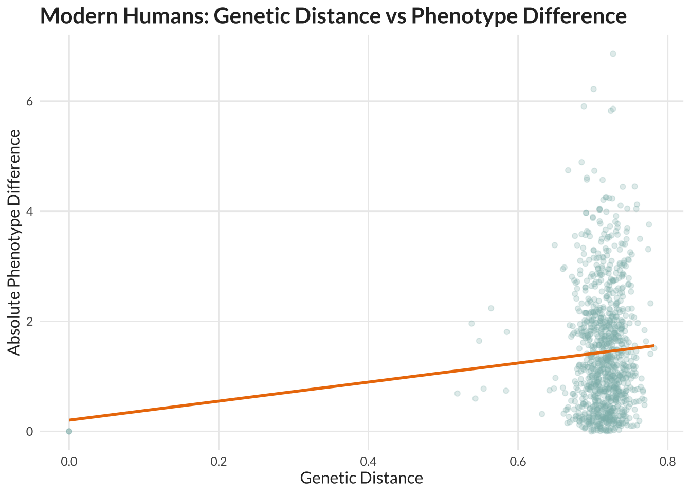
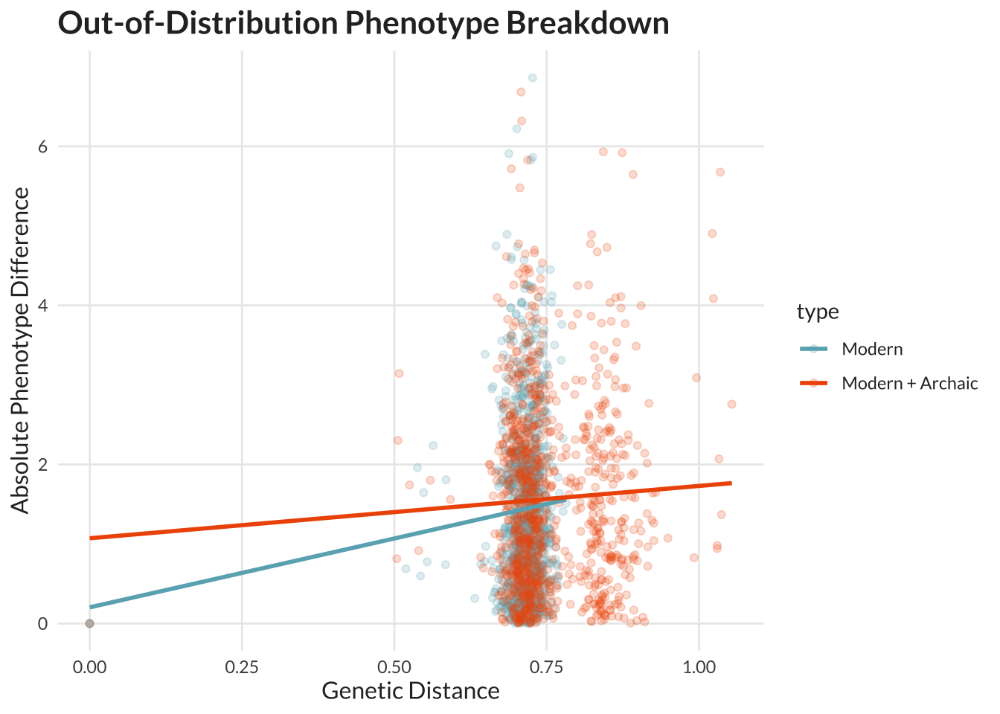
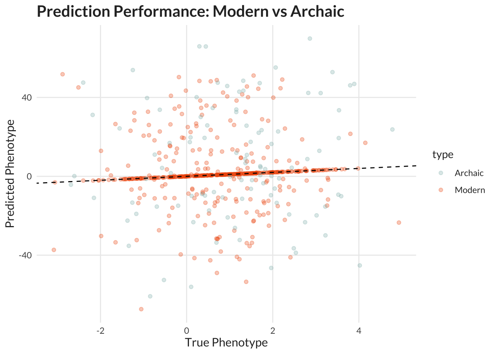

Last updated: 2026-03-29
Checks: 7 0
Knit directory: ~/Documents/GitHub/PAINT/
This reproducible R Markdown analysis was created with workflowr (version 1.7.2). The Checks tab describes the reproducibility checks that were applied when the results were created. The Past versions tab lists the development history.
Great! Since the R Markdown file has been committed to the Git repository, you know the exact version of the code that produced these results.
Great job! The global environment was empty. Objects defined in the global environment can affect the analysis in your R Markdown file in unknown ways. For reproduciblity it’s best to always run the code in an empty environment.
The command set.seed(20251106) was run prior to running
the code in the R Markdown file. Setting a seed ensures that any results
that rely on randomness, e.g. subsampling or permutations, are
reproducible.
Great job! Recording the operating system, R version, and package versions is critical for reproducibility.
Nice! There were no cached chunks for this analysis, so you can be confident that you successfully produced the results during this run.
Great job! Using relative paths to the files within your workflowr project makes it easier to run your code on other machines.
Great! You are using Git for version control. Tracking code development and connecting the code version to the results is critical for reproducibility.
The results in this page were generated with repository version 216fc6e. See the Past versions tab to see a history of the changes made to the R Markdown and HTML files.
Note that you need to be careful to ensure that all relevant files for
the analysis have been committed to Git prior to generating the results
(you can use wflow_publish or
wflow_git_commit). workflowr only checks the R Markdown
file, but you know if there are other scripts or data files that it
depends on. Below is the status of the Git repository when the results
were generated:
Ignored files:
Ignored: .RData
Ignored: .Rhistory
Ignored: .Rproj.user/
Ignored: analysis/.Rhistory
Ignored: analysis/.Rproj.user/
Ignored: data/modern_metadata.csv
Ignored: data/neo_uvi.csv
Ignored: data/pigmentation_snps.csv
Ignored: data/simons_metadata.csv
Ignored: data/simons_whole.csv
Unstaged changes:
Modified: .gitignore
Modified: analysis/_site.yml
Note that any generated files, e.g. HTML, png, CSS, etc., are not included in this status report because it is ok for generated content to have uncommitted changes.
These are the previous versions of the repository in which changes were
made to the R Markdown (analysis/phenotypic_inference.Rmd)
and HTML (docs/phenotypic_inference.html) files. If you’ve
configured a remote Git repository (see ?wflow_git_remote),
click on the hyperlinks in the table below to view the files as they
were in that past version.
| File | Version | Author | Date | Message |
|---|---|---|---|---|
| Rmd | 216fc6e | Lily Heald | 2026-03-27 | Update text |
library(ggplot2)Warning: package 'ggplot2' was built under R version 4.4.3library(dplyr)Warning: package 'dplyr' was built under R version 4.4.3
Attaching package: 'dplyr'The following objects are masked from 'package:stats':
filter, lagThe following objects are masked from 'package:base':
intersect, setdiff, setequal, unionlibrary(showtext)Loading required package: sysfontsLoading required package: showtextdblibrary(wesanderson)
library(patchwork)
# Fonts and colors
font_add_google("Lato", "lato")
showtext_auto()
wes_cols <- wes_palette("Zissou1", 100, type = "continuous")
theme_pub <- function() {
theme_minimal(base_family = "lato") +
theme(
text = element_text(color = "#2c2c2c"),
plot.title = element_text(size = 16, face = "bold"),
axis.title = element_text(size = 12),
panel.grid.minor = element_blank()
)
}
set.seed(42)
N <- 500 # population size
G <- 20 # generations
L <- 1000 # genome length (SNPs)
recomb_rate <- 0.01 # recombination probability per locus
heritability <- 0.5
noise_sd <- 1
init_population <- function(N, L) {
matrix(rbinom(N * L, 2, 0.5), nrow = N, ncol = L)
}
reproduce <- function(pop) {
N <- nrow(pop)
L <- ncol(pop)
new_pop <- matrix(0, nrow = N, ncol = L)
parents <- matrix(0, nrow = N, ncol = 2)
for (i in 1:N) {
p1 <- sample(1:N, 1)
p2 <- sample(1:N, 1)
parents[i, ] <- c(p1, p2)
mask <- rbinom(L, 1, 0.5)
recomb <- rbinom(L, 1, recomb_rate)
genome <- ifelse(mask == 1, pop[p1, ], pop[p2, ])
genome[recomb == 1] <- ifelse(mask[recomb == 1] == 1, pop[p2, recomb == 1], pop[p1, recomb == 1])
new_pop[i, ] <- genome
}
list(pop = new_pop, parents = parents)
}
genetic_distance <- function(g1, g2) {
mean(abs(g1 - g2))
}
phenotype_function <- function(G, beta = NULL, epistasis_weight = 0.5) {
L <- ncol(G)
if (is.null(beta)) {
beta <- rnorm(L, 0, 0.05)
}
idx <- sample(1:L, 50)
interaction_term <- rowSums((G[, idx[1:25]] - 1) * (G[, idx[26:50]] - 1))
linear <- G %*% beta
as.vector(heritability * (linear + epistasis_weight * interaction_term) + rnorm(nrow(G), 0, noise_sd))
}
generate_archaic <- function(n, L) {
base <- matrix(rbinom(n * L, 2, 0.5), nrow = n)
# Introduce block LD-like structure
for (b in seq(1, L, by = 50)) {
block_effect <- rnorm(n, 0, 1)
base[, b:(b+49)] <- base[, b:(b+49)] + block_effect
}
round(pmin(pmax(base, 0), 2))
}
pop <- init_population(N, L)
history <- list()
pedigree <- list()
for (t in 1:G) {
res <- reproduce(pop)
pop <- res$pop
history[[t]] <- pop
pedigree[[t]] <- res$parents
}
final_pop <- history[[G]]
# Modern effect sizes
beta_modern <- rnorm(L, 0, 0.05)
phen_modern <- phenotype_function(final_pop, beta_modern)
# Archaic effect sizes shifted
archaic_pop <- generate_archaic(100, L)
beta_archaic <- beta_modern + rnorm(L, 0, 0.05)
phen_archaic <- phenotype_function(archaic_pop, beta_archaic)
train_idx <- sample(1:nrow(final_pop), 300)
X_train <- final_pop[train_idx, ]
y_train <- phen_modern[train_idx]
# Linear model (train on modern only)
df_train <- data.frame(y_train, X_train)
colnames(df_train) <- c("phen", paste0("SNP", 1:L))
model <- lm(phen ~ ., data = df_train)
df_modern <- data.frame(final_pop)
colnames(df_modern) <- paste0("SNP", 1:L)
pred_modern <- predict(model, newdata = df_modern)Warning in predict.lm(model, newdata = df_modern): prediction from
rank-deficient fit; attr(*, "non-estim") has doubtful casesdf_archaic <- data.frame(archaic_pop)
colnames(df_archaic) <- paste0("SNP", 1:L)
pred_archaic <- predict(model, newdata = df_archaic)Warning in predict.lm(model, newdata = df_archaic): prediction from
rank-deficient fit; attr(*, "non-estim") has doubtful casesmse_modern <- mean((phen_modern - pred_modern)^2)
mse_archaic <- mean((phen_archaic - pred_archaic)^2)
mse_modern[1] 237.7535mse_archaic[1] 885.086sample_pairs <- function(pop, phen, n_pairs = 1000) {
N <- nrow(pop)
dists <- numeric(n_pairs)
phen_diff <- numeric(n_pairs)
for (i in 1:n_pairs) {
a <- sample(1:N, 1)
b <- sample(1:N, 1)
dists[i] <- genetic_distance(pop[a, ], pop[b, ])
phen_diff[i] <- abs(phen[a] - phen[b])
}
data.frame(dist = dists, phen_diff = phen_diff)
}
modern_data <- sample_pairs(final_pop, phen_modern)
archaic_data <- sample_pairs(rbind(final_pop, archaic_pop),
c(phen_modern, phen_archaic))
archaic_data$type <- "Modern + Archaic"
modern_data$type <- "Modern"
combined <- bind_rows(modern_data, archaic_data)p1 <- ggplot(modern_data, aes(x = dist, y = phen_diff)) +
geom_point(alpha = 0.25, color = wes_cols[20]) +
geom_smooth(method = "lm", color = wes_cols[80], se = FALSE) +
labs(title = "Modern Humans: Genetic Distance vs Phenotype Difference",
x = "Genetic Distance", y = "Absolute Phenotype Difference") +
theme_pub()
p1`geom_smooth()` using formula = 'y ~ x'
p2 <- ggplot(combined, aes(x = dist, y = phen_diff, color = type)) +
geom_point(alpha = 0.2) +
geom_smooth(method = "lm", se = FALSE) +
scale_color_manual(values = c(wes_cols[10], wes_cols[90])) +
labs(title = "Out-of-Distribution Phenotype Breakdown",
x = "Genetic Distance", y = "Absolute Phenotype Difference") +
theme_pub()
p2`geom_smooth()` using formula = 'y ~ x'
df_plot <- data.frame(
truth = c(phen_modern, phen_archaic),
pred = c(pred_modern, pred_archaic),
type = rep(c("Modern", "Archaic"), c(length(phen_modern), length(phen_archaic)))
)
p3 <- ggplot(df_plot, aes(x = truth, y = pred, color = type)) +
geom_point(alpha = 0.3) +
geom_abline(slope = 1, intercept = 0, linetype = "dashed") +
labs(title = "Prediction Performance: Modern vs Archaic",
x = "True Phenotype", y = "Predicted Phenotype") +
scale_color_manual(values = c(wes_cols[20], wes_cols[90])) +
theme_pub()
p3
sessionInfo()R version 4.4.2 (2024-10-31)
Platform: aarch64-apple-darwin20
Running under: macOS 26.3.1
Matrix products: default
BLAS: /Library/Frameworks/R.framework/Versions/4.4-arm64/Resources/lib/libRblas.0.dylib
LAPACK: /Library/Frameworks/R.framework/Versions/4.4-arm64/Resources/lib/libRlapack.dylib; LAPACK version 3.12.0
locale:
[1] en_US.UTF-8/en_US.UTF-8/en_US.UTF-8/C/en_US.UTF-8/en_US.UTF-8
time zone: America/Detroit
tzcode source: internal
attached base packages:
[1] stats graphics grDevices utils datasets methods base
other attached packages:
[1] patchwork_1.3.2 wesanderson_0.3.7 showtext_0.9-7 showtextdb_3.0
[5] sysfonts_0.8.9 dplyr_1.2.0 ggplot2_4.0.2 workflowr_1.7.2
loaded via a namespace (and not attached):
[1] sass_0.4.10 generics_0.1.4 lattice_0.22-7 stringi_1.8.7
[5] digest_0.6.39 magrittr_2.0.4 evaluate_1.0.5 grid_4.4.2
[9] RColorBrewer_1.1-3 fastmap_1.2.0 Matrix_1.7-4 rprojroot_2.1.1
[13] jsonlite_2.0.0 processx_3.8.6 whisker_0.4.1 ps_1.9.1
[17] promises_1.5.0 mgcv_1.9-4 httr_1.4.7 scales_1.4.0
[21] jquerylib_0.1.4 cli_3.6.5 rlang_1.1.7 splines_4.4.2
[25] withr_3.0.2 cachem_1.1.0 yaml_2.3.12 otel_0.2.0
[29] tools_4.4.2 httpuv_1.6.16 curl_7.0.0 vctrs_0.7.1
[33] R6_2.6.1 lifecycle_1.0.5 git2r_0.36.2 stringr_1.6.0
[37] fs_1.6.6 pkgconfig_2.0.3 callr_3.7.6 pillar_1.11.1
[41] bslib_0.10.0 later_1.4.5 gtable_0.3.6 glue_1.8.0
[45] Rcpp_1.1.1 xfun_0.56 tibble_3.3.1 tidyselect_1.2.1
[49] rstudioapi_0.18.0 knitr_1.51 farver_2.1.2 nlme_3.1-168
[53] htmltools_0.5.9 labeling_0.4.3 rmarkdown_2.30 compiler_4.4.2
[57] getPass_0.2-4 S7_0.2.1